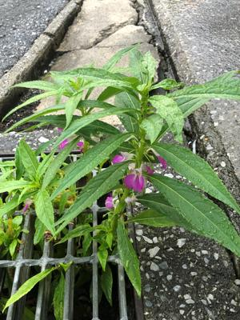

うるがいの話 ある日
最新: 排水溝の鳳仙花【うるがいの話 ある日】とは 一日だけのプログです
『うるがいの話』の最新一日だけのプログで、通信料が少なく経済的だ。カニの画像をクリックすると全ての日付が載る『うるがいの話』サイトを表示します
|
|
【うるがいの話】 うるがい(ｳﾙｶﾞｲ urugai)とは、『もずくがに』の名前でとても大きくなります。 |
|---|---|
|
|
【カミマヤーの話】 猫のことを方言でマヤーといいます。カミマヤー（kamimayaa）とは、神の猫のことです。 |
|
【たながぁの音楽】 たながぁ（ﾀﾅｶﾞｰ tanagaa）とは手長えびのことで、何種類かあり大きいのは車 エビぐらいになります。 |

|
【ぶながぁの話】 ぶながぁ(ﾌﾞﾅｶﾞｰ bunagaa)とは、赤い髪の毛、赤い身体、そして身長は１ｍ２０ｃｍ ぐらい、川の蟹を食べているの目撃された。場所は沖縄県国頭郡大宜味村のと ある村僕の隣近所に住んでいる爺さんから、聞いた話です。 |
|
|
【ギーマの話】 ギーマ(giima)とは、山原の里山に咲くスズランに似た、 花を付けます。実は食べられます、 気が付くと口の周りが紫になっています。 |
2022年10月19日 (水）排水溝の鳳仙花
17:36
雨が降る夕方、傘をさしながら（歯医者の帰り）歩いていると道路脇の排水溝
から、白色が混ざったピンクの鳳仙花の花が、綺麗に咲いていました。そのう
ち大雨で、排水溝に溜まった土が流されると、この鳳仙花も流され無くなって
しまうのでしょう。

こんにちは、いつもお世話になっています。給付金のお支払いが遅くなって、
申し訳ございません。全国で感染拡大の頃から、給付金請求が通常の５から６
倍で、大変お時間を頂いています。
現在、８月末の受付書類を処理しているようです。
本社からメッセージが入るかと思いますので、ご連絡差し上げます。
大変申し訳ございません。
９月２日に子供のコロナ給付申請の封筒をポストに投函したものの、給付がま
だなのである。そもそも申請が受け付けられているのか不安になり、ＬＩＮＥ
で保険会社の担当にを通信したところの回答である、安心する。
１７時２９分 ビットコインの総資産 ￥８、２７８↓